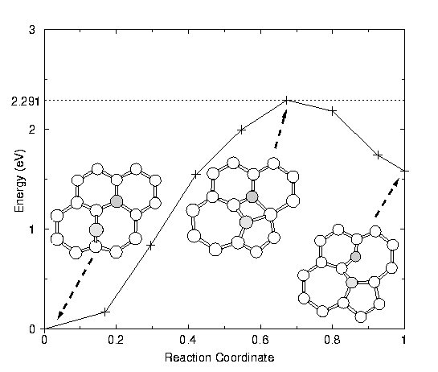

| |
Recent Projects
Posters showing some of the projects I've been involved in recently can be found here.
Research subjects include
- Chemical doping of carbon nanotubes (nitrogen impurities)
- Intrinsic defect behaviour in graphite and nanotubes
- Behaviour of fluorine on carbon nanotube surfaces
- Intrinsic irradiation induced defects in BN nanotubes
- Modified fullerene structures (azafullerenes, paired pentagon structures)
- Fluorination of fullerenes - isomer families, addition routes
- Catalysed structural changes in fullerenes and nanotubes
- Theoretical and experimental EELS studies of nanomaterials
- Metal absorption and diffusion on carbon nanotubes
- Novel oxide nanostructures (TiOxHy nanotubes, scrolls and rods, FeOx nanorods, etc)
- Hydrogen interaction with dislocations in silicon and diamond
- Science communication and science policy
- Public participation in scientific research
...previously...
Nanotube based composites
Carbon nanotubes are the flagship in the new world of
nanotechnology research - molecular tubes of carbon their strength is
theoretically 100 times that of steel with only one sixth of the weight.
One of their first promising applications will be in composite materials -
what if we could add them to plastics, ceramics and metals we currently
use, and find these materials suddenly stronger, harder, tougher? With
other added benefits (electrical conductivity, improved thermal conductance)
then suddenly we could have lighter more efficient planes, cheaper more
efficient cars, bridges that could span vast distances, earthquake 'proof'
buildings, etc.
In reality we still have a few hurdles to overcome -
nanotubes often prefer to stick to each other rather than the material we add
them to, they are still expensive (but getting cheaper), and we need
to improve our techniques for lining them up and effectively binding them
to their host material.
In my composites work we are experimenting with all of
this, using surfactants to improve the mixing of the nanotubes, testing various
mechanical routes to align the tubes in the composite, various mechanical
testing techniques to assess the improvement in material properties after
adding the nanotubes, and state-of-the-art microscopy to see and understand
what's happening in these new materials at the molecular scale.
As we develop an increasing range of carbon structures with wide ranging
properties, we need to address the dynamics - how do such systems form
and evolve? How do they restructure under external factors such as applied
stress, irradiation, or heating?
In this work we explore the behaviour of point defects
such as ad-atoms, vacancies and impurity atoms, as well as topological
defects such as disclinations, dislocations and dislocation dipoles,
in carbon systems [2]. Using supercomputer modelling techniques (density
functional theory) we examine their structure, the nature of their interaction,
and try to determine low energy transformation paths between various
configurations.
Recent work has led to the discovery of a catalysed
exchange process in carbon networks, whereby a single carbon ad-atom
can aid Stone Wales type bond rotations, lowering the migration barrier
by a factor of about four. This leads to qualitatively different behaviour
[1].
The discovery has important implications for many
carbon systems including the formation of C60, the growth
and distortion of nanotubes and buckyonions, and the behaviour of
graphite
under irradiation. (poster).

- Nanoengineering : Chemical Physics Letters (2001).
- `LDF Calculations of point defects in graphites and fullerenes'
M. Heggie, B. R. Eggen, C. P. EWELS, P. Leary, S. Ali, G. Jungnickel,
R. Jones, P. R. Briddon, Electrochem. Soc. Proc. Vol. 98-8, 60-67
(1998).
Mechano-chemistry : Hydrogen in silicon and diamond
Conventional theory says that pre-existing dislocations
can move through a semiconductor, sweeping up impurities as they pass.
Meanwhile other impurities can diffuse through the lattice to the dislocations.
In this way impurities modify the behaviour of pre-existing dislocation
structures and hence affect material plasticity. Our latest work in
the field of hydrogen impurities in silicon and diamond is pointing
to a radical new field of mechano-chemistry. In this case impurities
are able to nucleate dislocations, and propagate their growth;
i.e. the impurities both initiate and control plastic behaviour
in a material.
Hydrogen is a very important impurity in both diamond
and silicon, yet little is known about it since it is so hard to detect.
Hydrogen is deliberately implanted into silicon during the smart
cut process, where implantation occurs at a fixed depth, the silicon
sample is annealed, and then fractures along the implantation plane,
giving an atomically smooth hydrogenated surface. The mechanism for
this process is not properly understood. In silicon the behaviour of
dislocations has been studied before and after deliberate hydrogen introduction;
both the pre-factor and the activation energy for motion change radically.
Hence hydrogen can change the plasticity of silicon.
Our early investigations of H interaction with dislocations
showed that H binds strongly to dislocations, and modifies the atomic
rearrangements necessary for their motion. These results were in quantitative
agreement with the shifts observed in experiment [1].
In later work we extended this to dislocation behaviour
in diamond [2], which again shows interesting changes in behaviour.
This may have implications for processing of artificial diamonds.
Our current research is following two directions. Firstly we are developing
LINEWISE, a kinetic monte carlo simulation of dislocations in
semiconductors. We are feeding into this the results of our high level
density functional calculations, and using LINEWISE to study the dynamics
of dislocation motion in different regimes. The other research centres
on further studies of dislocation nucleation and growth in the presence
of hydrogen.
Mechano-chemistry may well explain unusual behaviour in other materials,
such as sudden quartz fracture deep in the earth's core, occurring during
earthquakes (quartz is often the first material to break, despite its
extreme hardness). We are also interested in sudden failure in ice,
for example fracture leading to avalanche. It is clear that this is
an interesting new line of research that could shed light on many previously
unexplained materials phenomena.
- `Hydrogen Interaction with dislocations in Si'
C. P. EWELS, S. Leoni, M. I. Heggie, P. Jemmer, E. Hernández,
Phys. Rev. Lett. 84 (4) 690 (2000). (abstract,
full text)
- `First principles studies of H in diamond'
J. P. Goss, R. Jones, M. I. Heggie, C. P. EWELS, P. R. Briddon,
S. Öberg, Phys. Stat. Sol. (a) 186 2, 263-268 (2001).
(abstract)
- 'Theory of dislocations in diamond and silicon and their interaction
with hydrogen'
M. I. Heggie, S. Jenkins, C. P. EWELS, P. Jemmer, R. Jones,
P. Briddon, J. Phys. Cond. Matt. 12 (49), 10263-10270 (2000).
(abstract,
full text)
|
|
{kind=link}